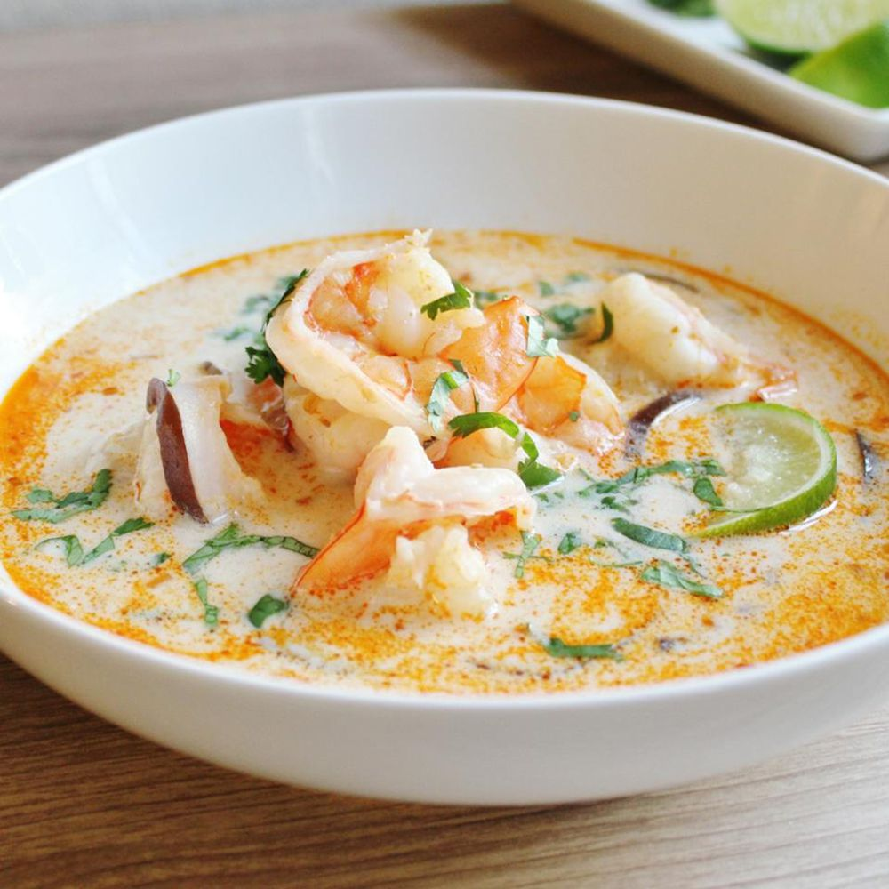

Thai Coconut Soup

Description
Better than the soup nazi's soup
Wow guests and friends with this ancient thai secret
Ingredients
- Thai Coconut Broth
- 2 Cans of coconut milk
- 2 limes
- 1 twig of lemon grass, sliced and crushed
- Ginger paste
- 1/2 of a medium red onion
- Frozen pre-cooked Shrimp
- crushed red pepper flakes
- 1 pouch of microwave rice
Steps
- Oil large pot and saute onions, red pepper, ginger, and lemon grass for roughly 5 minutes
- Add broth and coconut milk; bring to a boil
- Cut and squeeze limes in to the broth; drop in as well
- Reduce heat and add shrimp
- Heat rice
- Spoon out lemograss and limes
- Spoon out shrimp and onion on to rice
- Pour desired amount of broth over rice